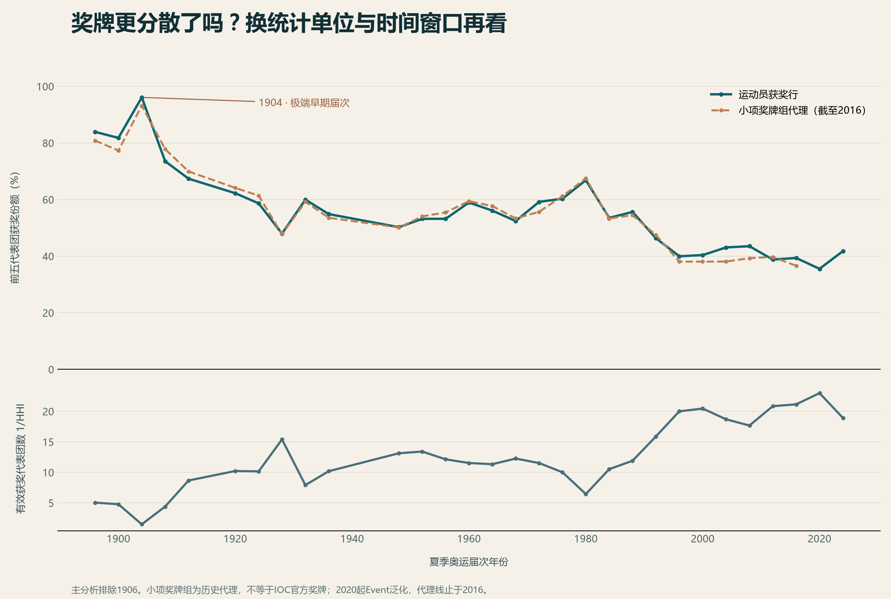

64.8%1896—1936 前五份额中位数
40.4%1992—2024 前五份额中位数
21.1 → 18.92016—2024 有效获奖代表团数

长期下降，也有局部反弹
1896 年前五份额为 83.9%，2024 年为 41.8%。改用早期和现代各届中位数，下降方向仍在。但 2016 年的 39.3% 到 2024 年回升为 41.8%；获奖代表团从 86 增至 92，并不意味着份额同时更均匀。
换统计单位，方向是否还在？
2016 年以前，将同届、代表团、运动、小项和奖牌类型合为一个历史奖牌组代理；早期前五份额中位数 67.0%，1992—2016 为 38.1%。方向仍在，但代理不是 IOC 官方小项表；2020 起 Event 泛化，不能继续接线。
检查清洗决定
2024 年保留重复候选余量时前五份额为 41.8%，删除重复余量后为 41.8%，相差 0.018 个百分点。该差异小，但只覆盖这一项处理选择。
这张图不能证明什么
赛事扩容、团队规模、项目设置、主办和抵制都可能改变分布；描述性趋势不能识别单一因果机制。有效获奖代表团数定义为 1/HHI，HHI 为各代表团份额平方和。阅读完整方法、边界和复现说明 ↗